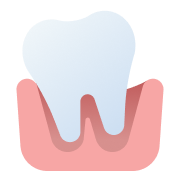
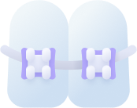
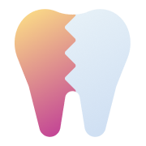

Опыт врачей более 14 лет

Рентген
КТ-диагностика

Лечение кариеса
Лечение пульпита
Лечение периодонтита
Лечение системой ICON

Пластика уздечки лазером
Удаление молочных зубов

Исправление прикуса брекетами
Каппы
Элайнеры
Исправление прикуса пластинками

Гигиеническая чистка полости рта
Герметизация фиссур
Фторирование молочных зубов

Скайсы